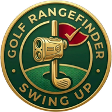
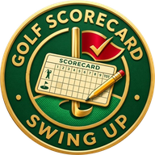

Télémètre
Connecte-toi pour retrouver tes parcours
Tes greens tracés sont enregistrés sur ton compte
et te suivent sur tous tes appareils.
1 mois de sauvegarde offert à la création du compte.
Chargement des parcours…
Choisissez un green
Point de départ
Unité de distance
Distance totale par club
Notez la distance que vous atteignez régulièrement, pas votre meilleur coup de l'année. C'est ce qui rend le conseil juste.

Parcours en cours
Tous les trous démarrent en par 4. Tu pourras les ajuster trou par trou pendant la partie.
Joueurs
Noms
Golf
Parcours
Ta partie en cours reste sur cet appareil.
Une fois enregistrée, elle est synchronisée sur ton compte.
Golf
Parcours
Parties jouées
Évolution trou par trou
Nous mesurons l'audience pour améliorer l'application. Aucune donnée n'est revendue et refuser ne limite rien.